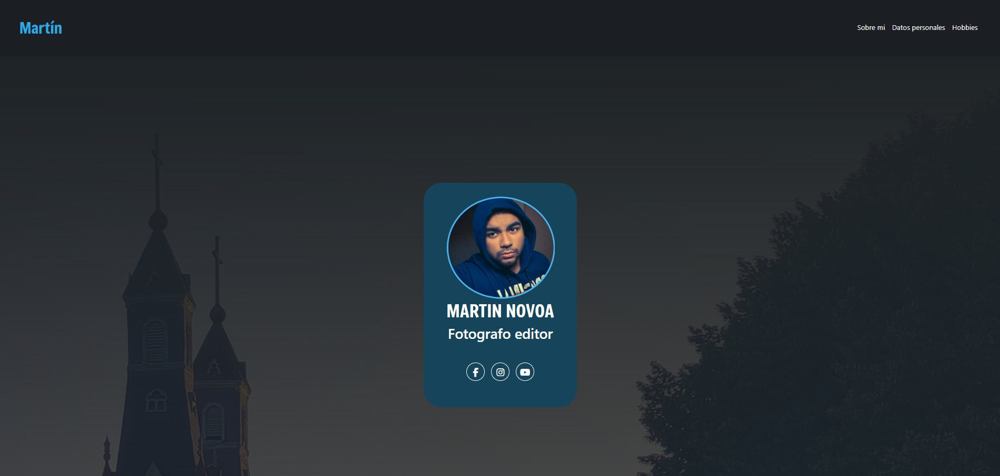
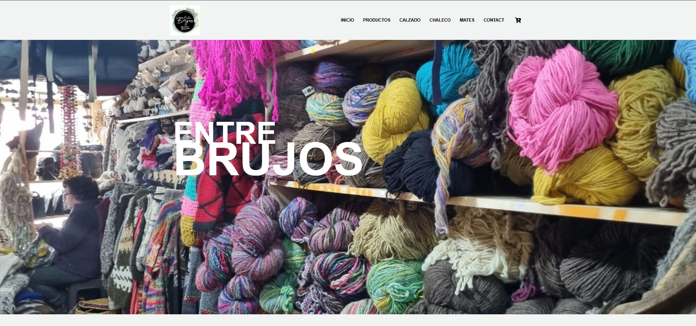

Sitio Web
Un modelo básico de sitio web desarrollado con HTML y CSS, diseñado para mostrar habilidades fundamentales en desarrollo web.
Este sitio web es mucho más que una simple recopilación de enlaces o trabajos es un espacio cuidadosamente diseñado para compartir contigo mis ideas, mis proyectos y todo aquello que me apasiona. Aquí encontrarás una muestra representativa de los proyectos que he realizado a lo largo del tiempo, cada uno con su propio proceso, propósito y aprendizaje. Más allá de mostrar resultados, este sitio busca reflejar mi evolución, mi forma de pensar y la manera en que abordo los desafíos creativos y técnicos. Es, en esencia, una ventana abierta a mi mundo profesional, personal, donde cada sección está pensada para invitarte a explorar, descubrir y, si lo deseas, conectar.
Hola, mi nombre es Martín Novoa, aunque en redes sociales y en distintos proyectos me conocen como MartinWlass. Tengo 25 años, recién cumplidos el pasado 26 de septiembre, y soy chileno, nacido y criado en la Isla Grande de Chiloé, específicamente en la ciudad de Castro, en la Región de Los Lagos. Crecer rodeado de paisajes tan únicos, con su mezcla entre mar, bosques y tradiciones, me ha ayudado a desarrollar una mirada muy especial sobre la vida, la creatividad y la forma en que entiendo la tecnología. En Chiloé, la naturaleza y la cultura se mezclan de una manera muy mágica, y creo que eso se refleja mucho en mi forma de pensar: soy alguien curioso, tranquilo, observador, pero también con muchas ganas de crear cosas nuevas, de explorar ideas y de aprender constantemente.
Hace poco terminé mis estudios como Técnico en Informática en la Universidad de Los Lagos, algo que para mí fue un logro muy importante. Fueron años de mucho esfuerzo, de noches largas programando, de aprender a resolver problemas y de descubrir que la informática es mucho más que código: es una herramienta para conectar ideas, personas y soluciones.
Ahora estoy en una etapa de transición, tomando un pequeño descanso antes de seguir con la siguiente meta: convertirme en Ingeniero en Informática. Este tiempo me ha servido no solo para recargar energías, sino también para mirar hacia atrás y darme cuenta de todo lo que he avanzado. A la vez, estoy participando activamente en los negocios familiares, algo que me ha permitido aprender de primera mano sobre el trabajo en equipo, la responsabilidad y la importancia de adaptarse a distintas situaciones del día a día.
Aunque no estoy trabajando de manera formal, me gusta mantenerme activo y en constante aprendizaje. Dedico parte de mis días a seguir estudiando por cuenta propia, ya sea leyendo documentación, tomando cursos online o experimentando con nuevos lenguajes y herramientas. Últimamente he estado muy enfocado en el desarrollo web, una rama que me apasiona porque combina lo técnico con lo visual. Me encanta crear sitios que sean funcionales pero también atractivos, y descubrir cómo un buen diseño puede transformar completamente la experiencia de quien lo usa. Además, me interesa mucho el mundo de la tecnología moderna, como la inteligencia artificial, la ciberseguridad y la automatización. Siento que vivimos en una época donde todo cambia muy rápido, y eso me motiva a seguir aprendiendo para no quedarme atrás y, sobre todo, para poder aportar algo positivo dentro de este mundo digital.
Fuera de lo técnico, me considero una persona curiosa, autodidacta y muy perseverante. Cuando algo me interesa, me gusta investigarlo a fondo y entender cómo funciona. También disfruto ayudar a los demás cuando tienen dudas sobre tecnología o informática; me gusta esa sensación de poder enseñar algo útil o resolver un problema que parecía complicado. En mi tiempo libre, suelo ver videos sobre desarrollo, jugar videojuegos, escuchar música o simplemente caminar por mi ciudad —que, aunque pequeña, siempre tiene algo nuevo que mostrar—. A veces me gusta pensar que todo lo que uno ve o vive puede convertirse en una fuente de inspiración para un nuevo proyecto o una idea diferente.
Este portafolio es una parte importante de todo eso. Es una forma de mostrar quién soy, qué hago y cómo he ido creciendo con el tiempo. Aquí encontrarás algunos de mis proyectos, aprendizajes y avances personales, desde pequeños experimentos hasta trabajos más elaborados. Cada uno representa una etapa distinta de mi camino en la tecnología y refleja mi esfuerzo, mi curiosidad y mis ganas de seguir mejorando. Agradezco que te tomes el tiempo de leer esto y de conocer un poco más sobre mí. Espero que, al recorrer este espacio, puedas ver no solo mis habilidades, sino también mi pasión por aprender, crear y seguir evolucionando.

Un modelo básico de sitio web desarrollado con HTML y CSS, diseñado para mostrar habilidades fundamentales en desarrollo web.

Un modelo de sitio web de comercio artesanal desarrollado con REACT, enfocado en la en la venta de productos artesanales de la zona.
Un banner temático de Batman creado utilizando PHOTOSHOP, destacando habilidades en diseño. Actualmente se han creado mas proyectos.
Si deseas ponerte en contacto conmigo, puedes contactarme en: